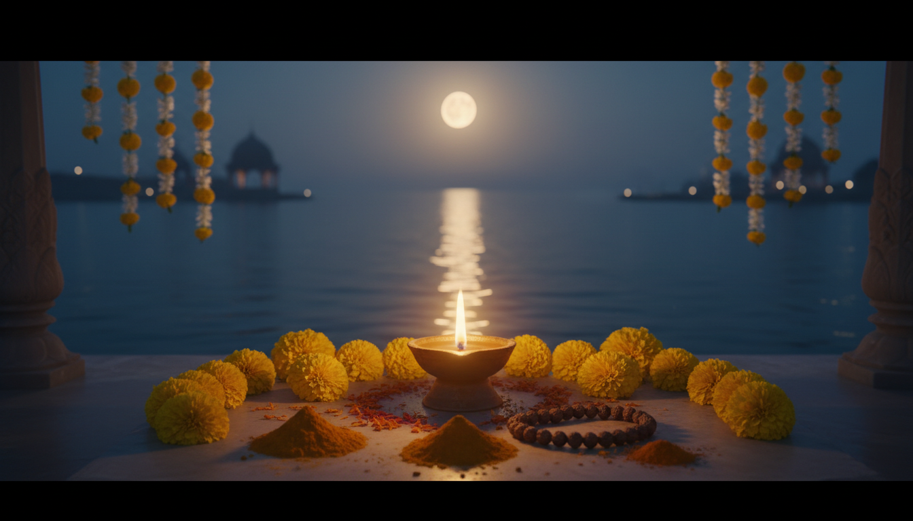

1. प्रस्तावना: ब्रह्मांडीय अनुकंपा और एक नई ऊर्जा का स्वागत
??? 2026 ?? ?? ???????? ???? ????? ??????? ?? ???? ?????????? ????? ??? ?? ?? ???? ?? ??? ??? ?? ??????? ???????? ???? ???? ??? ?????? ???? ???, ?? ?????, ??????, ????????? ???????, ????-???? ?? ?????????? ????????? ?? ????? ??????? ????? ??? ?? ?????? ?? ???? ???? ?? ??? ???? ???? ???????? ?? ????, ????? ???? ?? ???? ????, ????? ?? ?????? ???? ???? ?? ???? ???

2. वैदिक ज्योतिष में बृहस्पति का स्वरूप: 'बृहत पाराशर होरा शास्त्र' के आलोक में
'बृहत पाराशर होरा शास्त्र' (BPHS) के अनुसार, बृहस्पति ग्रहों के मंत्रिमंडल में 'मंत्री' (Mantri) की भूमिका निभाते हैं। अध्याय 3 के श्लोक 14-15 में स्पष्ट किया गया है कि वे ज्ञान और विवेक के अधिष्ठाता हैं। गुरु के स्वरूप का वैदिक विवरण इस प्रकार है:
- अधिष्ठाता देवता: बृहस्पति के अधिष्ठाता देवता साक्षात 'भगवान ब्रह्मा' हैं, जो सृष्टि के सृजनकर्ता हैं।
- शारीरिक गठन: गुरु का शरीर विशाल और गौरवर्ण है। उनकी आंखें शहद के समान सुनहरी (Honey-colored) हैं और उनके बाल भी सुनहरे (Tawny) हैं। वे अत्यंत बुद्धिमान और समस्त शास्त्रों के ज्ञाता हैं।
- सप्त धातु: शरीर के सात तत्वों में बृहस्पति 'वसा' (Fat/Medas) का प्रतिनिधित्व करते हैं।
- प्रकृति और गुण: वे 'सात्विक' प्रकृति के हैं और कफ प्रधान हैं। मंत्रों और पवित्र ज्ञान पर उनका पूर्ण आधिपत्य है, इसलिए उन्हें 'मंत्रेश्वर' के रूप में पूजा जाता है।
3. कर्क में उच्च का गुरु: प्रचुरता की आध्यात्मिक परिभाषा
कर्क राशि चंद्रमा की राशि है, जिसे 'आकाश की जननी' (Mommy of the Sky) कहा जाता है। जब विस्तार के कारक बृहस्पति इस पोषणकारी राशि में आते हैं, तो वे 'सच्ची प्रचुरता' (True Abundance) को परिभाषित करते हैं।
- तरल स्वर्ण और जीवन का आधार: उच्च का गुरु केवल भौतिक धन नहीं, बल्कि जीवन रक्षक तत्वों का प्रतीक है। जिस प्रकार एक शिशु के लिए माता का दूध (Breast milk) 'तरल स्वर्ण' के समान है और स्वच्छ जल जीवन का आधार है, उसी प्रकार यह गोचर हमें उन बुनियादी सुखों के प्रति कृतज्ञ बनाता है जो हमें पोषण देते हैं।
- आधुनिक चमत्कार: गुरु की सृजन शक्ति का प्रमाण इसी तथ्य से मिलता है कि विश्व के पहले 'आईवीएफ' (IVF) शिशु का गर्भाधान भी बृहस्पति के कर्क गोचर के दौरान ही हुआ था। यह जीवन के विस्तार की असीमित संभावनाओं को दर्शाता है।
- भावनात्मक गहराई: यह गोचर मिथ्या अहंकार और भौतिक प्रदर्शन से दूर, हृदय की कोमलता, परिवार और समुदाय के साथ जुड़ने का समय है। यह हमें सिखाता है कि एक 'मकान' को 'घर' में कैसे बदला जाए।
4. 12 राशियों पर गोचर का प्रभाव (Rising Signs के आधार पर)
बृहस्पति का यह गोचर आपकी लग्न राशि के अनुसार जीवन के विशिष्ट क्षेत्रों को सक्रिय करेगा:
| राशि (Ascendant) | गोचर का भाव | मुख्य प्रभाव और आशीर्वाद (Key Effects) |
|---|---|---|
| मेष | चतुर्थ भाव | नए घर का सपना पूरा होना, पारिवारिक सुख और संपत्ति लाभ। |
| वृषभ | तृतीय भाव | संचार कौशल में वृद्धि, भाई-बहनों से मधुर मिलन और लेखन में सफलता। |
| मिथुन | द्वितीय भाव | आर्थिक समृद्धि, संचित धन में वृद्धि और परिवार का पूर्ण सहयोग। |
| कर्क | प्रथम भाव | आत्म-नवीनीकरण का काल; मंगल द्वारा पहुंचाई गई क्षति के बाद 'फीनिक्स' की तरह उदय। |
| सिंह | द्वादश भाव | आध्यात्मिक जागृति, ध्यान और प्रकृति के सानिध्य में मानसिक शांति। |
| कन्या | एकादश भाव | सामाजिक नेटवर्क का विस्तार, मित्रों से लाभ और सोशल मीडिया पर प्रसिद्धि। |
| तुला | दशम भाव | करियर में बड़ी राहत; विषाक्त कार्य वातावरण (Toxic work environment) से मुक्ति और पदोन्नति। |
| वृश्चिक | नवम भाव | उच्च शिक्षा, विदेश यात्रा और पुस्तक प्रकाशन के लिए अत्यंत शुभ समय। |
| धनु | अष्टम भाव | पैतृक संपत्ति से लाभ और 'वंशानुगत हीलिंग' (Ancestral healing) के अवसर। |
| मकर | सप्तम भाव | विवाह के योग, व्यापारिक साझेदारी में वृद्धि और दूसरों की उदारता का लाभ। |
| कुंभ | षष्ठ भाव | स्वास्थ्य में सुधार, सेवा भाव में वृद्धि और दैनिक दिनचर्या में अनुशासन। |
| मीन | पंचम भाव | रचनात्मकता और संतान सुख; किंतु 'अति-उत्साह' और अत्यधिक पार्टियों (Partying) से बचें। |
5. बृहस्पति की कृपा प्राप्त करने के व्यावहारिक उपाय
इस गोचर की सकारात्मक ऊर्जा को आत्मसात करने के लिए निम्नलिखित क्रियात्मक सुझावों का पालन करें:
- [ ] वंशानुगत शोध और परंपरा (Ancestral Research): अपने पूर्वजों की परंपराओं से जुड़ें और अपने कुल की जड़ों को खोजने का प्रयास करें।
- [ ] अंतर्ज्ञान पर विश्वास (Watery Intuition): कर्क एक जल तत्व की राशि है; तर्क के स्थान पर अपनी अंतरात्मा की आवाज़ को मार्गदर्शक बनने दें।
- [ ] गृह-अभयारण्य (Home Sanctuary): अपने घर में एक पवित्र और शांत कोना बनाएं जहाँ आप अपनी आध्यात्मिक ऊर्जा को संचित कर सकें।
- [ ] भावनात्मक उदारता (Emotional Generosity): दूसरों की आवश्यकताओं को उनके बिना कहे समझने का प्रयास करें और भावनात्मक सहयोग प्रदान करें।
6. निष्कर्ष: हृदय, घर और वंश का विस्तार
बृहस्पति का कर्क राशि में यह पारगमन हमें स्मरण कराता है कि वास्तविक प्रगति बाहर की दौड़ में नहीं, बल्कि आंतरिक विकास में निहित है। यह वह समय है जब ब्रह्मांड हमें पुनः अपनी जड़ों की ओर लौटने, अपने परिवार को संवारने और अपने हृदय को विस्तार देने का अवसर प्रदान कर रहा है। जब हमारे प्रियजन सुरक्षित और स्वस्थ होते हैं, वही वास्तविक प्रचुरता है। इस गोचर के दौरान यह याद रखें कि 'देने में ही प्राप्त करना निहित है'। अपने भविष्य की नींव को प्रेम और करुणा के जल से सींचें, क्योंकि यहीं से आपके सुखमय वंश का विस्तार होगा।
Sources
39. [Brihat Parasara Hora Sastra \[23\] , chapter 12, Page 126, sloka 4 - ResearchGate](https://www.researchgate.net/figure/Brihat-Parasara-Hora-Sastra-23-chapter-12-Page-126-sloka-4_fig3_370060999)
- Jupiter Transit Cancer 2026: Date, Time, Effects, Predictions, and Remedies for all Zodiac Signs - Astro Zindagi
- Jupiter Transit 2026 (Guru Peyarchi) Dates & Remedies | AstroVed
- Jupiter Exalted in Cancer 2026 : Predictions for All 12 Rising Signs (Advanced Astro Analysis) - Shilaavinyaas
- Jupiter Transit in Cancer 2026 for Cancer Natives | Vedic Astrology ...
- 2026 Planetary Transits: Exact Dates for Jupiter, Saturn, Venus, Rahu & Ketu: Vedic & Western - Digital Karmakanda
- Jupiter Transit in Cancer (2026): Effects on All 12 Zodiac Signs & Proven Remedies
- Jupiter Transit 2026: Jupiter Transit In Cancer On 2 June, 2026
- Timing of Marriage | JYOTHISHI
- Jupiter in all 12 houses - Consult Lunar Astro
- Jupiter Transit in Cancer 2026: Effects for All 12 Ascendants - Om.AI
- Jupiter in Cancer (June 2, 2026 – October 31, 2026): When Grace Finds You Without Effort
- Jupiter's Exalted Transit in Cancer 2025–26: The Year the Universe Rewrites Emotional Karma : r/AncientAstroVedic - Reddit
- Om Brihaspataye Namaha: Jupiter Mantra for Wisdom - AstroSight - AI Vedic Astrology
- Jupiter Beej Mantra - Vedic Crystals
- Benefits & Chanting Method of Brihaspati Mantra - Astrotalk
- Guruvar Remedies: 7 Powerful Thursday Rituals To Gain Lord Brihaspati's Blessings For Wealth, Wisdom And Success - ABP Live
- Thursday Puja Vidhi Explained: Complete Guruvar Vrat Ritual Guide - Astrovibes
- Thursday puja vidhi: A step-by-step guide to perform Guruvar vrat correctly - India TV News
- Guruvar Vrat - Procedure, Mantra and Significance of Thursday Fast - Eshwar Bhakti
- Starting Thursday Vrat? Follow These 5 Golden Rules to Please Lord Vishnu
- Jupiter's blessings and marriage timing: Understanding the power of Gurubala
- Marriage in Vedic Astrology: The Complete Reading Method ...
- 7 TIMING OF MARRIAGE Dr. N. G. Kumaran - International Journal ...
- Brihaspati Mantra Mantra Meaning and Benefits | - Times of India
- Brihaspati Beej Mantra: Jupiter Mantra for Wealth & Education - YouTube Music
- Predict Marriage Quality / Timing With Vedic Astrology | by Pragyanand Tiwari | Medium
- Vedic Astrology: Timing of Marriage | PDF - Scribd
- Vivah Muhurat 2026: Auspicious Marriage Dates in 2026 as per Hindu Panchang
- Best Wedding Dates In 2026 - Auspicious Hindu Panchang - BlueStone Blog
- Marriage Muhurat in February 2026 - Free Astrology Online
- Auspicious Muhurat In June 2026 - Good Days And Dates for All Your Events! May 18, 2026, Monday - Astroyogi
- Jupiter in Cancer 2025–2027 — The Return of the Heart's Wisdom - Life veda
- Why is Jupiter exalted in Cancer? : r/astrology - Reddit
- Your guide to Jupiter in Cancer - CHANI
- 2026 Planetary Transits (Gochar) Explained – Dates, Effects & Predictions - Astropatri
- Jupiter Exalted in Cancer: The True Meaning of Abundance and Prosperity - Jennifer Canhos - Ancestral Astrology
- Planetary Transits 2026: Get Astrological Transits Dates | GaneshaSpeaks
- Precise exaltation position of planet Jupiter (Guru) in Lord Sri Rama's birth chart - International Journal of Jyotish Research
- Jupiter's Influence on 12 Houses in Astrology | PDF - Scribd
- Parasara Sastra: Astrology Insights | PDF | Hindu Mythology - Scribd
- Jupiter's Transit in Cancer 2025: Remedies Every Parent Must Do On Ahoi Ashtami For Their Children's Bright Future - The Times of India
- Jupiter and Its Effects in 12 Houses of Horoscope in Lal Kitab - Astroshastra
- Bhava Phala Praveshika — 4: Dhana Bhava | by Varaha Mihira | Thoughts on Jyotish | Medium
- Taarabala, Chandrabala and Gurubala Calculator - Magha Astrology
- Free Shadbala Calculator - Planetary Strength Analysis - AstroSight - AI Vedic Astrology
- Calculating Planetary Strength in Astrology | PDF - Scribd
- BRIHAT PARASHARA HORA SHASTRA Vol 1 - En'gI Isht Rans I A Tion, C Ommenlary, Annotation and Editing by R. SANTHANAM | PDF | Astrology - Scribd
- Full text of "Brihat Parashara Hora Shastra" - Internet Archive
- Full text of "Brihat Parashara Hora Shastra" - Internet Archive
- Muhurta - Wikipedia
- Muhurta Chintamani : Govind Jyoti : Free Download, Borrow, and Streaming - Internet Archive
- FIXING A MUHURTA- AN OUTLINE OF THE STEPS INVOLVED - Karmic Rhythms | Dr. Satya Prakash Choudhary | Yoga Vedanta Buddhism Tantra Jyotish
- Vivaha Muhurta For Print | PDF - Scribd
- Muhurtacintamani, Muhūrtacintāmaṇi, Muhurta-cintamani: 4 definitions